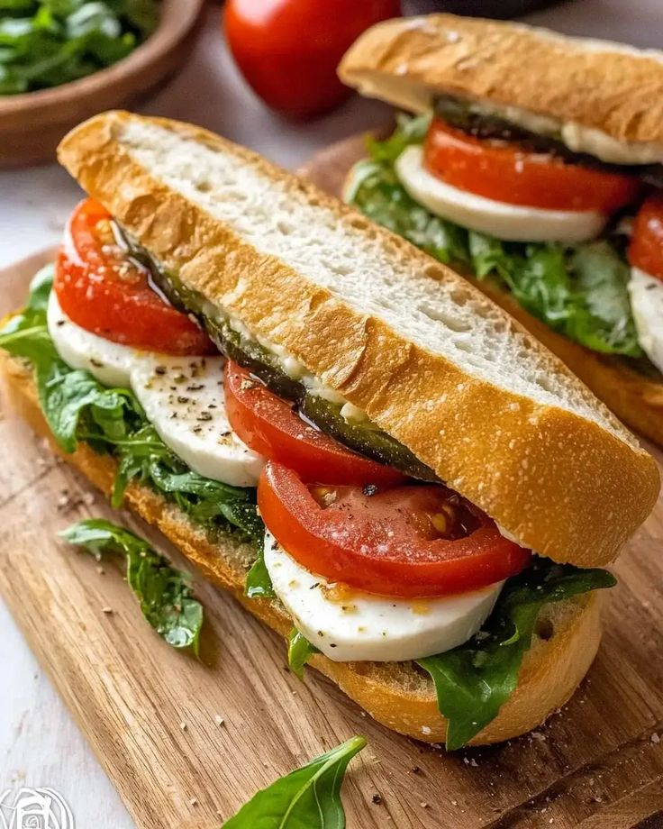

4.7
(267 reviews)Prep Time
Cook Time
Servings
Caprese Sandwich
A fresh Italian sandwich made with mozzarella, tomatoes, basil, and pesto.
- 11 ciabatta bread
- 2200g fresh mozzarella, sliced
- 32 large tomatoes, sliced
- 4Fresh basil leaves
- 53 tablespoons pestoi
- 62 tablespoons balsamic glaze
- 7Olive oil
- 8Salt and pepper
- 1Slice the ciabatta bread in half.
- 2Spread pesto on both sides.
- 3Layer tomatoes, mozzarella, and basil.
- 4Drizzle with olive oil and balsamic glaze.
- 5Season with salt and pepper.
- 6Close the sandwich and serve.
Calories
520 kcal
Protein
20g
Carbs
40g
Fat
22g
Fiber
3g
Sodium
400mg
- ✔Use fresh mozzarella for the best texture.
- ✔Toast the bread lightly if you prefer more crunch.